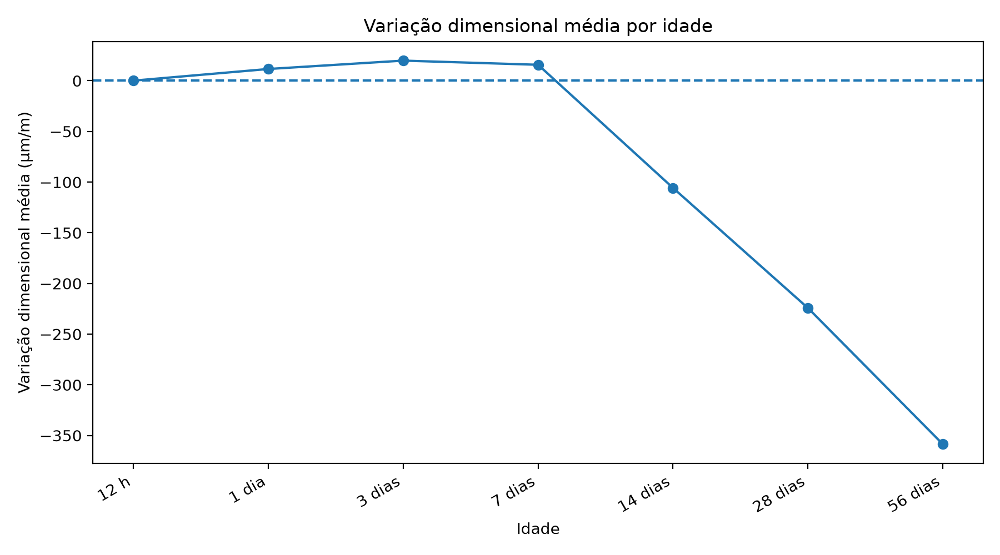

Experimento 01
Caracterização da variação dimensional por idade
Caracterizar a distribuição da resposta nas sete idades, preservando o sinal da deformação.
Resultado principal
A base apresenta expansão, retração e estabilidade em diferentes idades. A expansão predomina em 1, 3 e 7 dias; a retração passa a predominar a partir de 14 dias.
Decisão metodológica
Manter ε(t) com sinal como variável principal e tratar o problema como variação dimensional longitudinal.
Evidência tabular
| idade_label | registros | media | mediana | desvio_padrao | minimo | maximo | positivos | negativos | zeros |
|---|---|---|---|---|---|---|---|---|---|
| 12 h | 207 | 0.0966183574879227 | 0.0 | 1.7038899425039815 | -10.0 | 20.0 | 2 | 1 | 204 |
| 1 dia | 207 | 11.594202898550725 | 20.0 | 68.56270296651918 | -130.0 | 410.0 | 118 | 78 | 11 |
| 3 dias | 207 | 19.855072463768117 | 50.0 | 119.7630275900842 | -250.0 | 700.0 | 125 | 82 | 0 |
| 7 dias | 207 | 15.748792270531402 | 70.0 | 177.26699375173322 | -450.0 | 910.0 | 124 | 83 | 0 |
| 14 dias | 207 | -105.7487922705314 | -80.0 | 155.77957630628404 | -560.0 | 720.0 | 25 | 178 | 4 |
| 28 dias | 206 | -224.2233009708738 | -220.0 | 148.64306122230605 | -870.0 | 430.0 | 7 | 199 | 0 |
| 56 dias | 206 | -358.59223300970876 | -350.0 | 145.37574104960242 | -1000.0 | 210.0 | 5 | 201 | 0 |

Figura gerada pelo Experimento 01: media_variacao_por_idade.png

Figura gerada pelo Experimento 01: boxplot_variacao_por_idade.png
Rastreabilidade
Este experimento sustenta diretamente a seção 4.1 dos resultados parciais da dissertação.